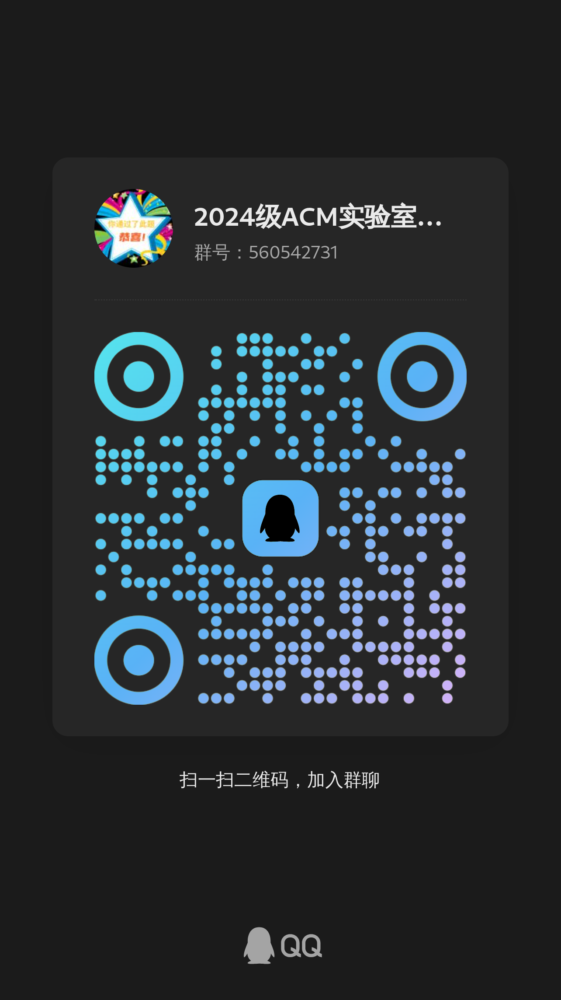

学校的Online Judge平台目前主要为学生提供在线程序评测和自动化代码批改服务。OJ实验室服务于YTU Online Judge平台，进行日常维护和升级。
1. 处理师生日常中对Online Judge平台的答疑，比如对学生提交题目情况的针对性处理、考试时进行监考及时对异常情况进行监督（不是每场考试都需要监考，偶尔而已，具体比如考生机器坏了要换个机器，需要我们手动清一下他的答题记录，诸如此类）。
2. 实验室安排的学习内容主要针对Web开发方面，不侧重算法。从前端的页面设计和实现、到后端系统设计和编程以及数据库的使用等均有涉猎。（无需紧张，知识都会循序渐进地安排学习，对新手很友好，专业词汇看着吓人其实不难学）。
3. 特别地，针对维护服务器等工作，要求成员们熟练使用Linux系统，所以平时的学习工作中使用的操作系统主要是Linux，需要熟悉环境学习操作命令。
在实验室内主要工作是管理与维护OJ系统，同时承担学院内程序设计类的测试、考试以及比赛的相关工作。
我们将通过下达阶段性任务，验收任务完成情况,进行新成员的考核筛选。任务内容例如：安装Linux环境、配置某一具体工具操作环境、做一个简单的前端网页、把前端网页跟后端服务器数据库连接起来等。下达任务的同时我们会提供相关的教程，跟着学习学会了做就行，不会的地方可以问学长学姐。在规定时间内，谁进度快做得质量高就选谁。
完全可以!做算法题主要考验大家的逻辑思维、数理思维方面的能力，可能有的同学数理功底并没有很出类拔萃，学习算法比较受挫，但Web开发这方面用到算法的部分并不深奥，主要需要的是大家的学习新知识的能力和毅力。
只要你踏实肯干，肯付出时间，学习开发技术见效非常快。比起“你有多聪明”，学习Web开发更考验“你有多少耐心，你能不能坚持下来”。只要你情绪稳定，肯下功夫，学好Web开发非常简单，并没有很晦涩难懂！
1. 内置空调和WIFI的独立学习空间以及高质量开放的学习资源。
2. 了解前沿的计算机技术，开阔自己的视野。学习Web开发技术，提高自己的项目能力。
3. 学长学姐为大家进行学习规划、解决日常学习中的问题和迷茫，避免在学习路 上跌跌碰碰，同时你会学到比一般同学多太多的技术。
4. 实验室中内氛围轻松，除前期的项目培训以及OJ日常的管理与维护外可供大家自主支配学习时间较多。
5. 有许多就职于百度、头条、小米等大厂的学长学姐，还有许多考入985、211院校的研究生学长学姐。
不是的，如果你通过考核最终成为了OJ实验室一员，在学习技术栈的时间之余完全可以进行算法的训练，并且同样可以参加蓝桥杯等算法竞赛。但人的精力是有限的，这是一个学习重心的选择。
2024.11月~寒假
OJ实验室进行招新工作的宣传,意向加入OJ实验室的同学可自学HTML,CSS,JavaScript
2025年上
意向加入OJ实验室的同学将参加ACM初试,通过后进入我们的阶段性任务环节，我们根据时间顺序依次发布2~3次Web开发的任务，定期检查任务完成情况。最后进行最终的任务成果验收和面试，确定最终入选的新成员。
现在加群，开始加入实验室考核队伍的第一步！胜利在向你们招手！！！
 加入交流群